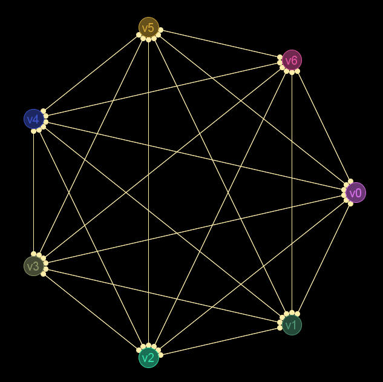
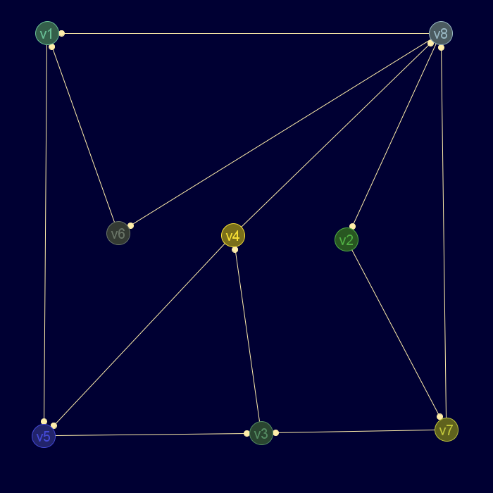

Descripción
Comprueba si un digrafo es balanceado (todos los grafos no dirigidos son balanceados)
Cadena de entrada
gr_balanceado
Cadena de salida
GRAFO.balanceado
Uso
gr_balanceado(<grafo>)
Ejemplos
gr_balanceado(gr_completo(7b))
Booleano: verdadero
Grafo en JMEScriptGUI con visor de grafos v0.1:

gr_balanceado(dic('etiquetas',['v1','v5','v3','v4','v8','v2','v7','v6'],'ady',[[0,1,0,0,0,0,0,0],[0,0,1,0,0,0,0,0],[0,0,0,1,0,0,0,0],[0,1,0,0,1,0,0,0],[1,0,0,0,0,1,0,1],[0,0,0,0,0,0,1,0],[0,0,1,0,1,0,0,0],[1,0,0,0,0,0,0,0]],'esDirigido',verdadero))
Booleano: falso
Grafo en JMEScriptGUI con visor de grafos v0.1:

Véase también…
Desde / Última modificación
v0.6.2.0